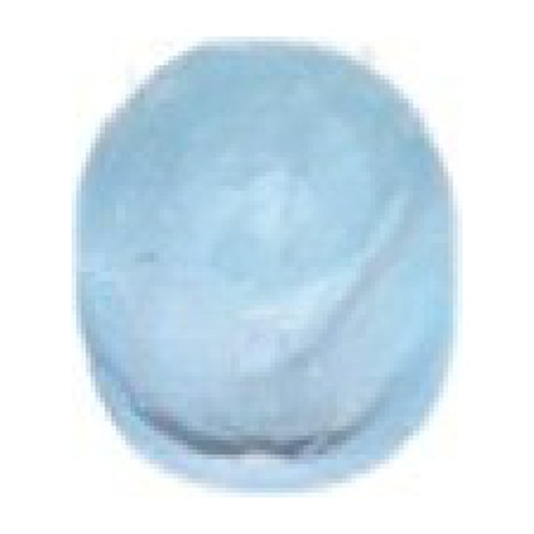
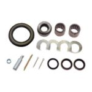
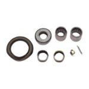
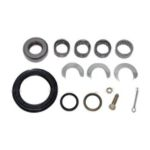
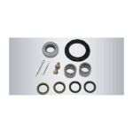
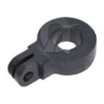
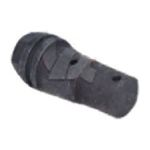
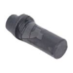
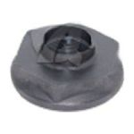

Available
Email for a quote
Toyota 90179-14002-71 Lock Nut
| OEM part number | 90179-14002-71 |
| Alternate numbers | 40131-71 |
| Fits | Toyota |
| Category | Steering |
| Type | Aftermarket replacement |
Send us the quantity you need and we'll reply with pricing, usually within 24 hours. Not the exact part? We can source it. Send the part number or a photo.
More Steering

04431-20052-71King Pin Seal Kit
04432-20061-71King Pin Seal Kit
04432-30140-71King Pin Seal Kit
04432-U2020-71King Pin Repair Kit
04631-30410-71Chain Eye Bolt
04943-30240-71Pin
04943-30250-71Pin
41124-10920-71Nut